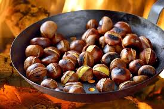
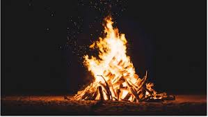

¿Qué es el Magosto?
Una fiesta otoñal donde se asan castañas, se canta y se celebra en comunidad.
Historia
El Magosto tiene raíces celtas y romanas. En Fresno se celebra desde hace siglos.
Tradiciones
- Recolección de castañas
- Hoguera comunitaria
- Vino nuevo y chorizo
- Música y bailes
Galería

